AllSafe
What is AllSafe?
AllSafe is an open-source, intentionally vulnerable Android application by Info Sec Adventures. Each screen is a self-contained challenge covering a common mobile bug class, which makes it a safe and legal target for practicing static and dynamic analysis without touching anyone else's app.
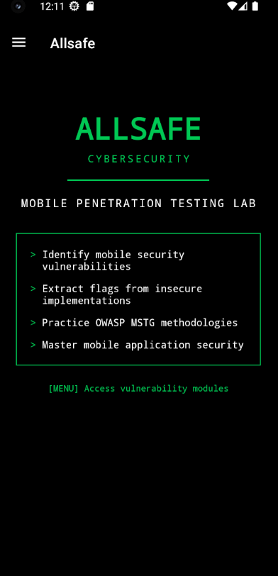
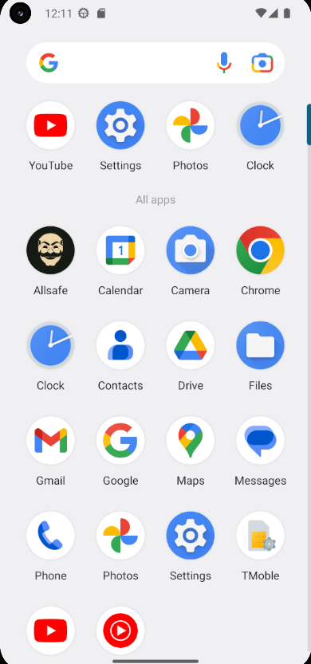
Objective
The purpose of this write-up is to map all bugs we find in AllSafe to the MASVS Control Groups.
The standard is divided into various groups of controls, labeled MASVS-XXXXX, that represent the most critical areas of the mobile attack surface:
- MASVS-STORAGE: Secure storage of sensitive data on a device (data-at-rest).
- MASVS-CRYPTO: Cryptographic functionality used to protect sensitive data.
- MASVS-AUTH: Authentication and authorization mechanisms used by the mobile app.
- MASVS-NETWORK: Secure network communication between the mobile app and remote endpoints (data-in-transit).
- MASVS-PLATFORM: Secure interaction with the underlying mobile platform and other installed apps.
- MASVS-CODE: Security best practices for data processing and keeping the app up-to-date.
- MASVS-RESILIENCE: Resilience to reverse engineering and tampering attempts.
- MASVS-PRIVACY: Privacy controls to protect user privacy.
In this write-up, we will identify vulnerabilities that map to each of these and write a report as if this were a professional job we were carrying out for a client. I will note the steps I took and the things I found. I am using Windows for my write-up, but you can use anything that feels comfortable for you. Just keep in mind, the commands are written for Windows PowerShell so you will need to use their equivalents in their respective OS environments.
Methodology
Each chapter becomes a theme, mapped to its MASVS group and the OWASP Mobile Top 10 (2024):
- Recon & Static Analysis will cover hardcoded secrets, insecure logging, exported components, and risky manifest flags (MASVS-CODE, MASVS-PRIVACY; M2, M8).
- Traffic & Cert Pinning will cover cleartext traffic, TLS interception, and certificate-pinning bypass (MASVS-NETWORK; M5).
- Insecure Data Storage will cover SharedPreferences, SQLite, and files left in the clear (MASVS-STORAGE; M9).
- Broken Cryptography will cover weak algorithms, hardcoded keys and IVs, ECB, and custom crypto (MASVS-CRYPTO; M10).
- Authentication & Session will cover local auth bypass, biometric handling, and session/token storage and reuse (MASVS-AUTH; M1, M3).
- Platform Interaction will cover exported components, deep links, intents, WebView settings, and JS bridges (MASVS-PLATFORM; M4, M8).
- Code-Level Bugs & Injection will cover input validation, SQL/command/path injection, and unsafe deserialization (MASVS-CODE; M4).
- Reverse Engineering & Anti-Tamper will cover Frida instrumentation, root/tamper detection and bypass, and obfuscation (MASVS-RESILIENCE; M7).
Tools Used
- Windows PowerShell (all commands below are written for it)
- Android Studio (Pixel 5 AVD emulator)
- jadx (decompile the app to readable Java)
- apktool (decode the manifest and resources)
- Burp Suite Community Edition (intercepting proxy)
- MobSF (mobsf.live) (automated static analysis)
- The Mobile Pentesting Walkthrough (the handbook this follows)
- OWASP MASVS & MASTG (the standard we map findings to)
01Recon & Static Analysis
AllSafe is a stand-in for real apps we would check in the real world. In a real engagement, usually we will get:
- The Binary - client will email us the APK/IPA or gives us a TestFlight/Firebase build. Binary just means the compiled app file: the
.apkon Android or the.ipa(containing a Mach-O) on iOS. Not the phone. - Test accounts - credentials for staging environments.
- Scope and rules of engagement - what backends we can touch or not touch.
- An authorization letter - lets us do our hacking.
We setup our Pixel 5, we got our Burp Proxy setup and also on the phone. We exported our CA and
pushed it to the Pixel 5. We can see decrypted HTTPS traffic. We downloaded AllSafe and pushed it to
the phone. We also got jadx and apktool. jadx is the single
most important Android static tool.
Four passes with an automated fifth.
1. Peek at the structure
We could just decompile it, but it's useful to know what exactly we're holding first.
- How big/complex is it? Is it one
classes.dexor six? - Are there native libraries? If yes, that's where Reverse Engineering comes into play.
- Are there assets or raw resources? (Which our peeking immediately finds.)
- Is it packed/obfuscated? If we already expect weird filenames, encrypted dex, or a loader stub, we won't have to waste a lot of time.
loader stub is what is found instead of real code when an app is packed
(protected/obfuscated by a commercial packer). It encrypts the real code into an assets/
blob or a .so instead of a classes.dex, with a tiny loader whose main job
is to decrypt the real dex and load it into memory at runtime. Static analysis can only go so far
when visible dexes are empty, there's an encrypted blob in assets, or a suspicious
native lib. We will go over dynamic analysis later, but that will let us dump the real dex from
memory!
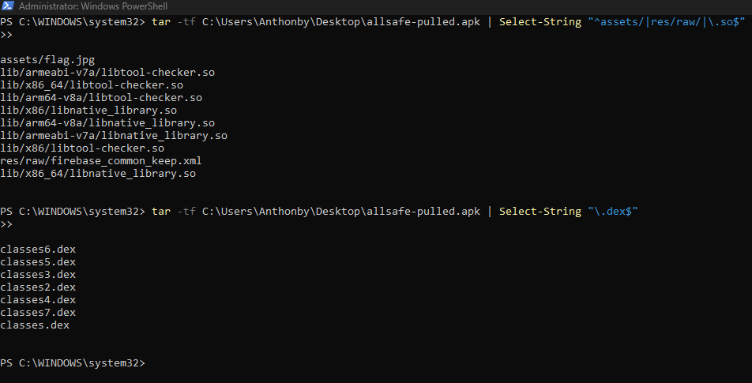
2. Decompile with jadx
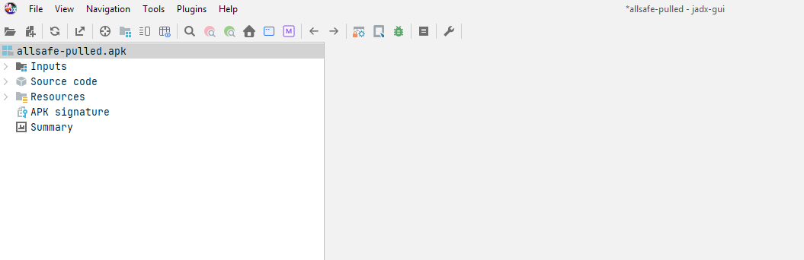
This is what the apk looks like opened up within jadx. We can open up all of our files on the left and go through them manually, or use shortcuts to find certain things.
3. Review the manifest
Let's navigate to Resources. AndroidManifest.xml is the app's blueprint. It has all declared components, permissions, and exported entry points. We should always check this first on every test.
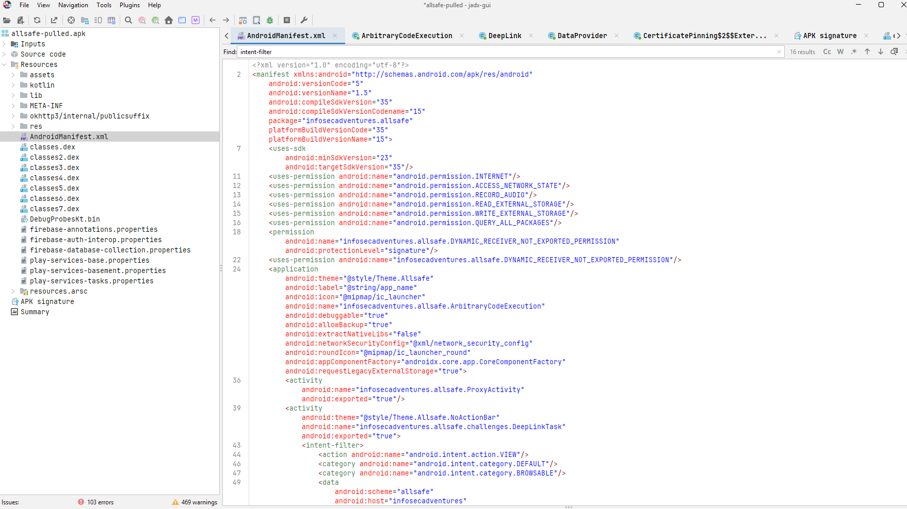
We are looking for specific flags that can lead us to interesting finds.
Risky manifest flags
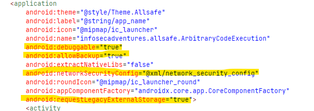
android:debuggable="true" and android:allowBackup="true".This shows android:debuggable="true" is on, which means the debug build shipped to
production. Anyone can use a debugger, run code as the app, read the memory... Should never be set in
a release.
android:allowBackup="true"- App data can be extracted over ADB withadb backup. No Root needed! This leaks whatever the app stores locally.android:networkSecurityConfig- Points to an XML file. Defines trusted CAs, cleartext exceptions, and pinning. Its absence (plus cleartext on) is itself a weak posture.android:requestLegacyExternalStorage="true"- Opts the app out of Scoped Storage and back into the old, permissive external-storage model. Combined with the storage permissions, the app can read and write broadly across shared storage, which widens what a backup, another app, or a compromised component can reach. It is a privacy and data-exposure concern.
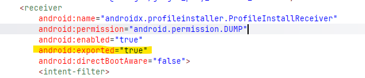
android:exported="true" on activities / services / receivers / providers. Keep in mind,
some of these are exported by design and benign, such as the ProfileInstallReceiver in
the image. We should focus on the app's own component.

The real lead is an exported <activity> whose intent-filter contains
VIEW + BROWSABLE + a custom <data android:scheme="allsafe">.
That combination = reachable from any web page! <activity android:name="...challenges.DeepLinkTask">
- this names the class. This tells us where to read.
Now you jump to infosecadventures.allsafe.challenges.DeepLinkTask in jadx!
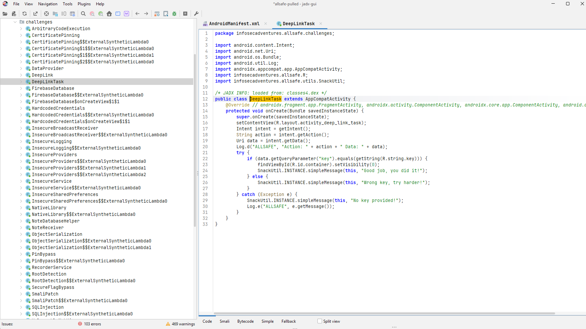
DeepLinkTask.onCreate.We see onCreate() which is where we should start. This is the method Android calls the
moment the activity is launched. So this is where the incoming intent and its URI get
received and read:
getIntent()intent.getData()data.getQueryParameter("key")
We can get a sense of the data flow. The BROWSABLE filter that we saw earlier means an
attacker controls the URI that starts the activity! When it starts, onCreate is called by
the system. This is the first spot where attacker-controlled input is consumed.
From here we can see a getString(R.string.key). To explain this: R.string.key
isn't the secret, but it's a label that says "go look up the string named key." Which
means the actual value lives in a separate resource file. This is called strings.xml. So
it's saying compare the user's input to whatever's stored under key and Android fetches
the real value at runtime.
R.string.key as a locker number, and strings.xml as the locker.
The code only shows you the number, but you have to open the locker to see what's inside. The secret
was in the locker the whole time. The developer didn't write it directly on the door.
And guess what? strings.xml ships within the APK exactly like the code does. So anyone
with the app can read it! The developer just added one hop of indirection.
This is also why when we do a keyword grep and our automation in step 5 it dodges detection. These
both scan the code, and the value is a random UUID with no telltale word like "password", so the only
way to catch it is to notice the R.string.key reference and follow this clue into
strings.xml.
Here under Resources -> resources.arsc -> res -> values -> strings.xml
we can see:
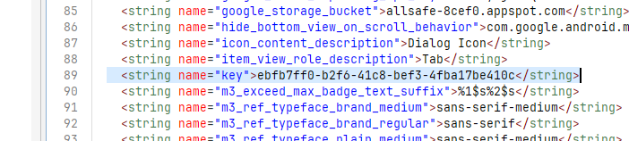
Now that we have the key, we can prove it actually works by firing the deep link ourselves. This crosses from static (reading) into dynamic (running), but it validates the finding. In PowerShell:
adb shell am start -W -a android.intent.action.VIEW -d "allsafe://infosecadventures/congrats?key=ebfb7ff0-b2f6-41c8-bef3-4fba17be410c"The activity launches with our key and the congrats screen pops up, confirming the hardcoded value
in strings.xml is the exact one the app checks against.
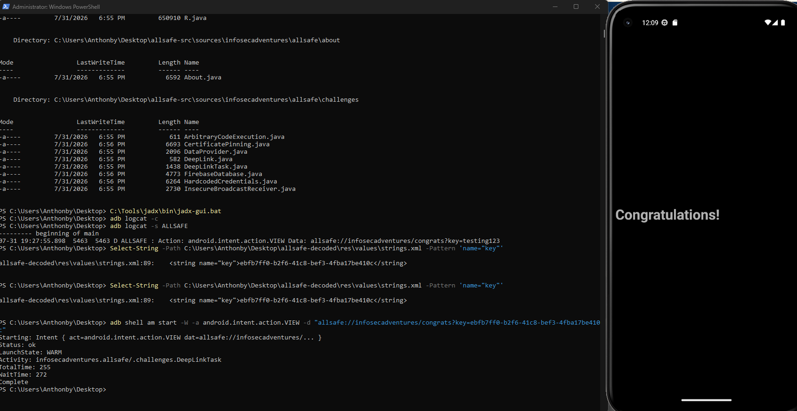
4. Hunt for secrets
Get-ChildItem -Recurse -File C:\Users\Anthonby\Desktop\allsafe-src\sources\infosecadventures\allsafe |
Select-String -Pattern "password|secret|api[_-]?key|token|http://|s3\.amazonaws|firebaseio\.com|BEGIN (RSA|EC|PRIVATE)"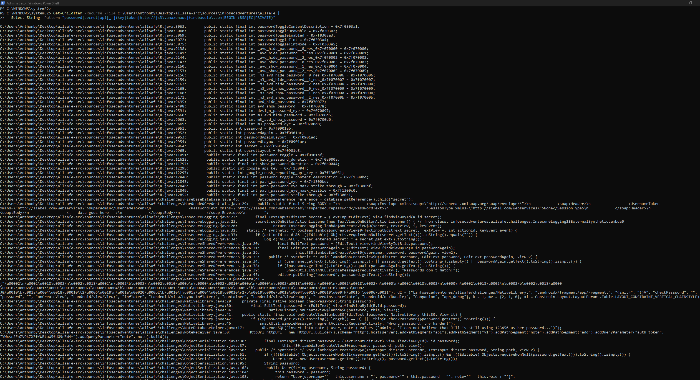
After searching through the app of allsafe for any juicy words, we get a
decent chunk of results in our CLI. However, nearly half of what's left is R.java which
are auto-generated resource IDs (passwordToggle..., google_api_key = 0x7f13004f).
Not values we are looking for, so let's tailor the search even further down.
Get-ChildItem -Recurse -File C:\Users\Anthonby\Desktop\allsafe-src\sources\infosecadventures\allsafe |
Where-Object { $_.Name -ne 'R.java' } |
Select-String -Pattern "password|secret|api[_-]?key|token|http://|s3\.amazonaws|firebaseio\.com|BEGIN (RSA|EC|PRIVATE)"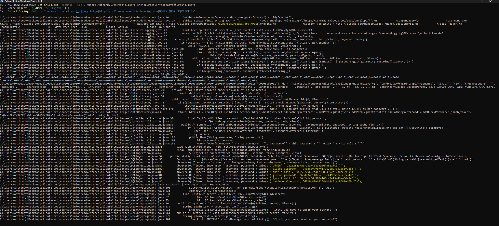
I highlighted a few of some juicy details we could find with this method.
5. MobSF - the automated first pass
MobSF (Mobile Security Framework) runs all of the above automatically and produces a scored report. I'll be using mobsf.live to upload and run the analysis.
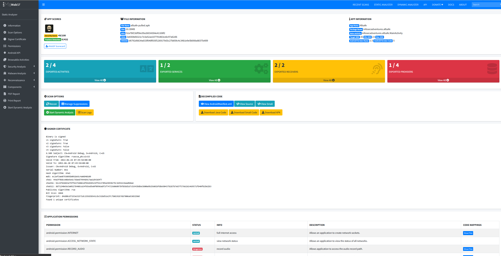
This report gives us:
- A manifest analysis (every flag from the tables above, flagged with severity).
- A secrets/hardcoded-strings list.
- Detected trackers and third-party SDKs (your M2 supply-chain view).
- Permission Breakdown.
- and... an overall security score!
Note: This does the same thing for iOS for .ipa.
debuggable and a literal password = "...", but it will
not understand that an exported activity bypasses your login, or that a "random" token is derived
from the device ID. Use it to triage fast, then read the code yourself. A report that's only a MobSF
export is not a pentest!
This is why when we found our hardcoded UUID from earlier, the keyword search never surfaced the UUID (no keyword, it lives in resources, not source).
So what did we find in Recon and Static Analysis?
These are a few of what we found, shown as an example of the Recon and Static Analysis process. Static analysis surfaced more across the app (hardcoded SOAP credentials, a base64 auth token, a hardcoded AES key, a Firebase API key), but these show the method end to end. Severity is tied to what each issue actually authorizes in this app.
| Title | Hardcoded secret in app resources |
|---|---|
| Severity | Low. The key only gates a local "congrats" screen. The same pattern guarding a real API key would be Critical. |
| Description | A deep-link query parameter is compared against a secret fetched with getString(R.string.key). The value is a hardcoded UUID stored in res/values/strings.xml (compiled into resources.arsc), a resource rather than source code. |
| Impact | The secret ships inside the APK, so anyone with the file recovers it offline (no device, no root) by following the R.string.key reference into strings.xml. A keyword grep and MobSF both miss it. |
| Evidence | infosecadventures.allsafe.challenges.DeepLinkTask.onCreate() → getString(R.string.key); value at res/values/strings.xml → <string name="key">...</string>. |
| MASVS / CWE | MASVS-CRYPTO / MASVS-STORAGE · CWE-798 |
| Mobile Top 10 | M2 · M8 |
| Remediation | Keep secrets out of the client; move the check server-side. Rotate any real key on exposure. |
| Title | Exported activity reachable via BROWSABLE deep link |
|---|---|
| Severity | Medium. An unauthenticated, web-reachable entry point, exposed to any app or web page. |
| Description | DeepLinkTask is exported with a VIEW + BROWSABLE intent-filter on the allsafe:// scheme, so any app (or a link on any web page) can invoke it with attacker-chosen URI data. |
| Impact | Exported components are the app's undocumented public API. A crafted allsafe:// link drives the activity with attacker-controlled input, with no authentication in front of it. |
| Evidence | AndroidManifest.xml → <activity android:name="...challenges.DeepLinkTask" android:exported="true"> with a VIEW/BROWSABLE <intent-filter> and <data android:scheme="allsafe">. Repro: adb shell am start -W -a android.intent.action.VIEW -d "allsafe://infosecadventures/congrats?key=...". |
| MASVS / CWE | MASVS-PLATFORM · CWE-926 |
| Mobile Top 10 | M8 · M4 |
| Remediation | Set exported="false" unless deliberately public; validate and authorize deep-link input; no sensitive actions from an unauthenticated deep link. |
| Title | Sensitive data written to the system log |
|---|---|
| Severity | Low. The logged value is already in the package, so the pattern is the risk. |
| Description | DeepLinkTask.onCreate logs the full incoming URI (query string included) with Log.d("ALLSAFE", "... Data: " + data). |
| Impact | logcat is readable over USB/adb logcat and, on older Android, by apps with READ_LOGS. Any token or PII routed through the deep link would leak. |
| Evidence | infosecadventures.allsafe.challenges.DeepLinkTask.onCreate() → Log.d("ALLSAFE", "... Data: " + data); observe with adb logcat -s ALLSAFE. |
| MASVS / CWE | MASVS-STORAGE · CWE-532 |
| Mobile Top 10 | M9 · M8 |
| Remediation | Never log request URIs or user data; strip debug logging from release builds. |
| Title | Insecure build and backup configuration |
|---|---|
| Severity | High for debuggable in a production release. (Calibration note: AllSafe ships as an app_debug training build, so it is expected here; rated as it would apply to a real app.) allowBackup: Low to Medium. |
| Description | The <application> tag sets android:debuggable="true" and android:allowBackup="true". |
| Impact | debuggable=true lets anyone attach a debugger, run code as the app, and read its memory on a non-rooted device. allowBackup=true allows extracting private data via adb backup (largely neutered on Android 12+, still a weak default). |
| Evidence | AndroidManifest.xml → <application ... android:debuggable="true" android:allowBackup="true">. |
| MASVS / CWE | MASVS-CODE · CWE-489, CWE-530 |
| Mobile Top 10 | M8 |
| Remediation | Ship release builds with debuggable=false; set allowBackup=false or exclude sensitive data via backup rules. |
02Traffic Interception & Cert Pinning
[ Burp CA setup, proxy config, whether HTTPS decrypts, any pinning and how it was bypassed. ]
| Title | [ finding name ] |
|---|---|
| Severity | [ ... ] |
| Description | [ ... ] |
| Impact | [ ... ] |
| Evidence | [ ... ] |
| MASTG | [ ... ] |
| Mobile Top 10 | [ ... ] |
| Remediation | [ ... ] |
03Insecure Data Storage
[ SharedPreferences, SQLite, files, external storage: what was stored in the clear. ]
| Title | [ finding name ] |
|---|---|
| Severity | [ ... ] |
| Description | [ ... ] |
| Impact | [ ... ] |
| Evidence | [ ... ] |
| MASTG | [ ... ] |
| Mobile Top 10 | [ ... ] |
| Remediation | [ ... ] |
04Broken Cryptography
[ Weak algorithms, hardcoded keys/IVs, ECB, custom crypto: what breaks and why. ]
| Title | [ finding name ] |
|---|---|
| Severity | [ ... ] |
| Description | [ ... ] |
| Impact | [ ... ] |
| Evidence | [ ... ] |
| MASTG | [ ... ] |
| Mobile Top 10 | [ ... ] |
| Remediation | [ ... ] |
05Authentication & Session
[ Local auth bypass, biometric handling, session/token storage and reuse. ]
| Title | [ finding name ] |
|---|---|
| Severity | [ ... ] |
| Description | [ ... ] |
| Impact | [ ... ] |
| Evidence | [ ... ] |
| MASTG | [ ... ] |
| Mobile Top 10 | [ ... ] |
| Remediation | [ ... ] |
06Platform Interaction (IPC, Deep Links, WebViews)
[ Exported components, deep links, intents, WebView settings and JS bridges. ]
| Title | [ finding name ] |
|---|---|
| Severity | [ ... ] |
| Description | [ ... ] |
| Impact | [ ... ] |
| Evidence | [ ... ] |
| MASTG | [ ... ] |
| Mobile Top 10 | [ ... ] |
| Remediation | [ ... ] |
07Code-Level Bugs & Injection
[ Input validation, SQL/command/path injection, unsafe deserialization. ]
| Title | [ finding name ] |
|---|---|
| Severity | [ ... ] |
| Description | [ ... ] |
| Impact | [ ... ] |
| Evidence | [ ... ] |
| MASTG | [ ... ] |
| Mobile Top 10 | [ ... ] |
| Remediation | [ ... ] |
08Reverse Engineering & Anti-Tamper
[ Frida instrumentation, root/tamper detection and bypass, obfuscation, patching. ]
| Title | [ finding name ] |
|---|---|
| Severity | [ ... ] |
| Description | [ ... ] |
| Impact | [ ... ] |
| Evidence | [ ... ] |
| MASTG | [ ... ] |
| Mobile Top 10 | [ ... ] |
| Remediation | [ ... ] |